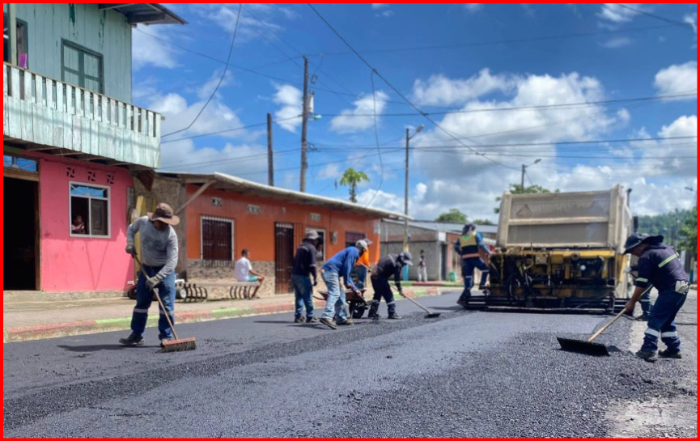
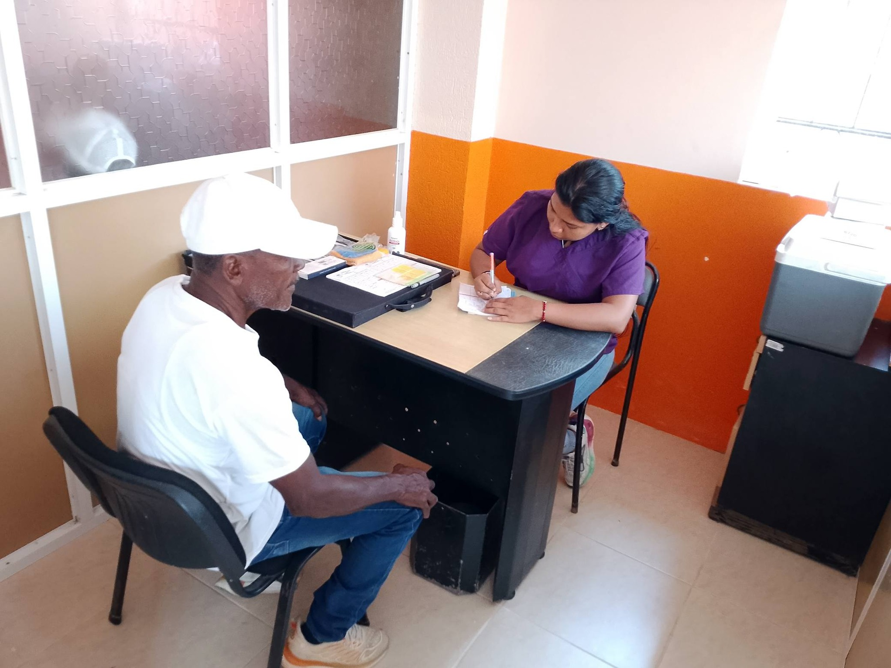
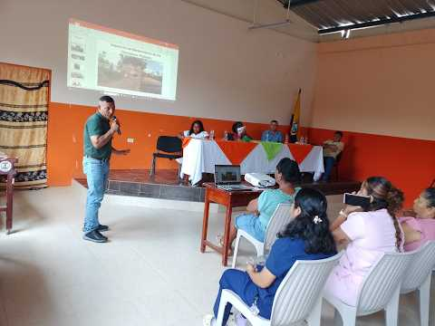

▣
GAD Parroquial
Conoce nuestra institución, organización y principales funciones.
Conocer más →Este portal web constituye un espacio de información, participación ciudadana y transparencia institucional. Aquí podrá conocer nuestras actividades, servicios, proyectos, obras y acciones encaminadas al desarrollo sostenible de nuestra parroquia.
Encuentra de manera rápida la información más importante de nuestra institución.
Conoce nuestra institución, organización y principales funciones.
Conocer más →Consulta información pública sobre nuestra gestión institucional.
Ver información →Espacios para fortalecer la participación y el diálogo con nuestra comunidad.
Participar →Conoce los proyectos y obras planificadas para nuestra parroquia.
Ver proyectos →Facilitamos información y atención para contribuir al bienestar de nuestra comunidad.

Conozca proyectos de infraestructura, mantenimiento vial y mejoramiento de espacios comunitarios.
Ver Más
Información sobre certificados, solicitudes y atención dirigida a la ciudadanía.
Ver Más
Programas de apoyo, capacitación y actividades para fortalecer la producción local.
Ver MásPonemos a disposición de la ciudadanía información relacionada con la gestión, planificación y administración institucional.
Conoce algunas de las áreas que forman parte de la planificación para el desarrollo de nuestra parroquia.
Proyectos orientados al mantenimiento y mejoramiento de las vías parroquiales.
Mejoramiento de espacios destinados a la convivencia y participación ciudadana.
Iniciativas para fortalecer la producción y economía de nuestra comunidad.
Mantente informado sobre actividades, reuniones, proyectos y comunicados oficiales del GAD Parroquial Chontaduro.
Conoce las actividades y novedades de nuestra comunidad.

Conoce las principales actividades desarrolladas en beneficio de nuestra comunidad.
Leer más →
Información sobre iniciativas y proyectos destinados al desarrollo parroquial.
Leer más →
Espacios de participación y diálogo con los habitantes de Chontaduro.
Leer más →Construyamos juntos una parroquia más participativa. Conoce los espacios de diálogo, reuniones y actividades comunitarias.
Para consultas, solicitudes o información institucional puedes comunicarte con nosotros.
Parroquia Chontaduro
Información institucional
Atención ciudadana